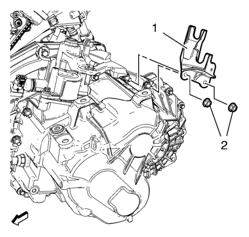

Sustitución del soporte del cable de la palanca de cambio y selectora
Herramientas especiales
DT-6042-A Llave de desmontaje
Si desea informarse sobre herramientas regionales equivalentes, consultar Herramientas especiales .
Procedimiento de desmontaje
- Desmonte la bandeja de la batería. Consultar Sustitución de la bandeja de la batería .

- Quite el cable de la palanca selectora y de la palanca del cambio (2) de la carcasa del control del cambio (3) mediante la llave de desmontaje DT-6042.
- Quite el cable de la palanca selectora y de la palanca del cambio del soporte (1) del cable de la palanca selectora y de la palanca del cambio.

- Quite las 2 tuercas del soporte del cable de la palanca de cambio y la palanca selectora (2).
- Desmonte el soporte de la palanca del cambio y del cable de la palanca selectora (1).
Procedimiento de montaje
- Monte el soporte de la palanca del cambio y del cable de la palanca selectora (1).
Precaución: Consulte Precaución con las fijaciones en la sección Prólogo
- Monte 2 tuercas del soporte del cable de la palanca selectora y de la palanca del cambio (2) y apriételos hasta 20 N·m (15 lib. pie).
- Monte el cable (2) de la palanca selectora y de la palanca del cambio en el soporte (1) del cable de la palanca selectora y de la palanca del cambio.
- Monte el cable de la palanca selectora y de la palanca del cambio en la carcasa de control del cambio (3).
- Monte la bandeja de la batería. Consultar Sustitución de la bandeja de la batería .
| © Copyright Chevrolet. Reservados todos los derechos |